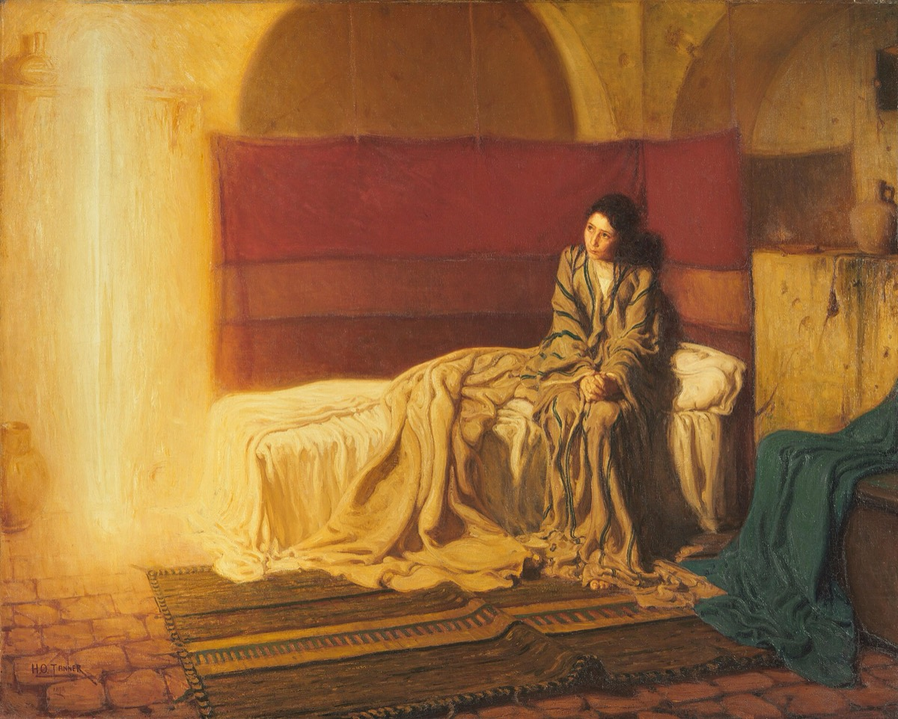

Emmanuel
Be It Unto Me
Behold, a virgin shall be with child, and shall bring forth a son, and they shall call his name Emmanuel, which being interpreted is, God with us.
Matthew 1:23

The talks
- Office Isaiah 7:14 and Matthew 1:23. The name is a sentence, not a label. Tell us what "God with us" claims, and why Matthew stops the story to translate it for his readers.
- Restoration 1 Nephi 11:13-23. Nephi is shown the virgin and then asked "knowest thou the condescension of God?" Show us what that word means and why it is the right one.
- Text Luke 1:26-38. Gabriel and Mary. Work the whole exchange, and land on the last line she says, which is the reason this cohort carries the subtitle it does.
- World Betrothal in first-century Judea. Find out what it legally was, how old Mary likely was, what the penalty for unfaithfulness during betrothal was under the law, and what Joseph could have done.
- Witness Joseph, in Matthew 1:18-25. He is called a just man who was not willing to make her a public example. Take him through the questions on the facing page. He never speaks in scripture.
- Objection The argument that Isaiah 7:14 says young woman rather than virgin, and that the whole doctrine rests on a translation error. Deal with the Hebrew almah and the Greek parthenos honestly and then answer it.
The title
Emmanuel is two Hebrew words stuck together, immanu and el, and it means God with us. Matthew is writing to Jewish readers who could have worked that out themselves, and he translates it anyway, which tells you he did not want anyone to miss it. The name is a claim about location. Not God above us, not God watching, but God here, in the room, in the family, in a body. In Isaiah the sign is given to a frightened king named Ahaz who is about to be attacked and who does not want the sign. That is worth remembering. The promise of God with us was first delivered to a man who was not interested. When Nephi is shown the same event centuries later and on another continent, the angel asks him whether he knows the condescension of God, and condescension is exactly the right word: it means coming down. Everything about this cohort is downward motion, from the courts of heaven to a betrothed girl in a small town in an occupied province. Your week covers the decision that made it possible, and the two young people who said yes to it before anyone else knew.
Required reading, for every speaker in this cohort
- Luke 1:26-56
- Matthew 1:18-25
- Isaiah 7:10-16
- 1 Nephi 11:13-23
- Philippians 2:5-8
Questions for thought
- Mary's last words to Gabriel are "be it unto me according to thy word." What is she agreeing to that she cannot yet have understood?
- Find out what betrothal actually meant legally. What was Mary risking by saying yes, and who would have believed her?
- Joseph never speaks anywhere in scripture. Matthew tells us what he decided rather than what he said. What do his decisions tell you about him?
- Isaiah's sign is given to a king who says he will not ask for one. Why give a sign to someone who refuses it?
- Mary goes to Elisabeth and stays three months. Why do you think she went, and why that long?
- Read the Magnificat in Luke 1:46-55. It is mostly about God overturning the powerful and feeding the hungry. Is that what you would expect from a girl who has just been told this news?
- Nephi is asked "knowest thou the condescension of God?" before he is shown the answer. Why ask first?
- Philippians 2 says he made himself of no reputation. What reputation was there to give up?
- Mary said yes without knowing the whole assignment. When have you had to do that?